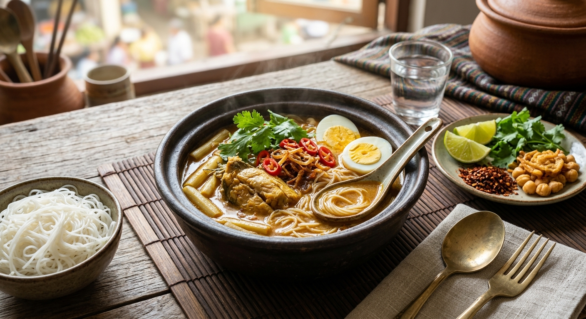

Widely celebrated as the national dish of Myanmar, Mohinga (မုန့်ဟင်းခါး) is a savory, deeply comforting fish noodle soup traditionally enjoyed for breakfast or special gatherings. The heart of the dish is a rich, aromatic broth made from catfish (or white fish), infused with smashed lemongrass, ginger, garlic, and onions, then thickened naturally with toasted chickpea flour and toasted rice powder. Tender tenderized banana stem slices or peeled shallots are added to simmer in the broth, imparting a subtle sweetness and unique textural crunch.
Unlike typical clear Asian noodle soups, Mohinga features a robust, herbal, and slightly thick broth served hot over soft thin rice vermicelli. The ultimate experience comes from its customizable toppings—diners personalize their bowl with crunchy chickpea fritters, hard-boiled eggs, fresh cilantro, chili flakes, and a bright squeeze of lime, creating a perfect balance of salty, savory, tangy, and crispy elements in every bite.
In a pot, boil the fish with 1 stalk of smashed lemongrass, 1/2 tsp turmeric, and a cup of water until cooked through. Remove the fish, remove skin/bones, and flake the meat coarsely. Save the poaching liquid/stock for the soup.
Dry-roast the chickpea flour and rice powder in a dry pan over medium-low heat until fragrant and light golden. Mix both with 1 cup of room-temperature water in a small bowl until smooth to create a slurry (this prevents clumping in the soup).
Pound or process the onion, garlic, ginger, remaining lemongrass, chili powder, and turmeric into a paste. Heat oil in a deep soup pot and sauté this paste over medium heat for 10-12 minutes until softened and aromatic. Add the flaked fish and fish sauce, cooking for another 5 minutes to infuse the flavors.
Pour in the reserved fish stock and remaining water. Slowly whisk in the roasted flour slurry, stirring continuously to ensure it blends seamlessly into the broth. Add the sliced banana stem (or shallots), bring to a gentle boil, then lower the heat and simmer for 25–30 minutes until the soup thickens and the shallots/banana stem become tender. Season with black pepper and extra fish sauce to taste.
Place a portion of cooked rice vermicelli in a bowl. Ladle the piping-hot fish broth generously over the noodles. Top with sliced hard-boiled eggs, crispy fritters, fresh cilantro, chili flakes, and a wedge of fresh lime before serving.